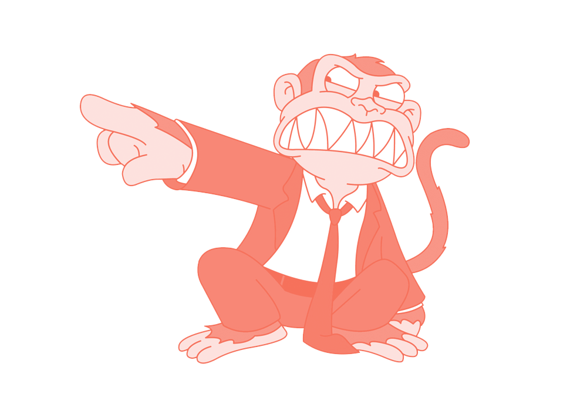
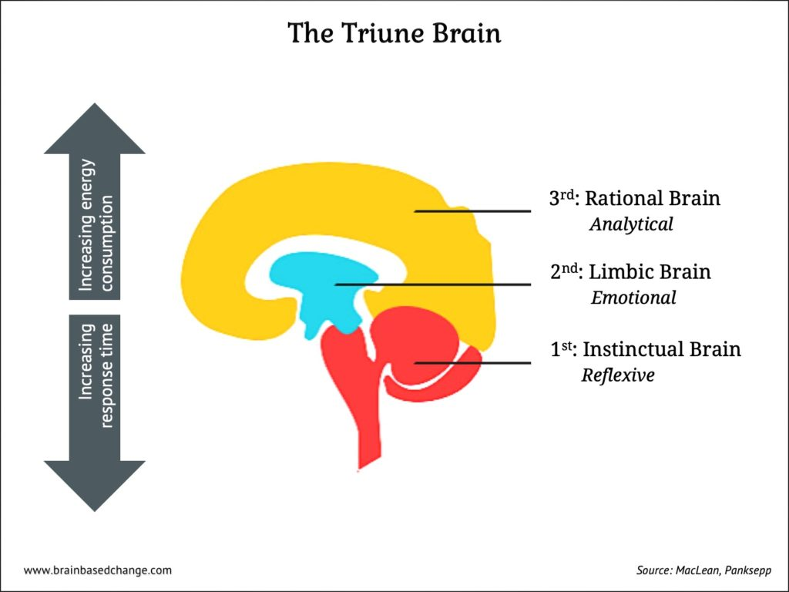
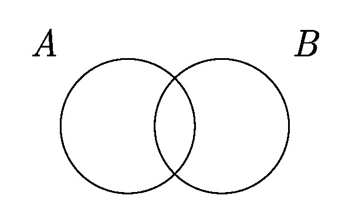

Слабость воли
Как разгрузить и сэкономить
сделали Мартын & Санч

DISCLAIMER
В нашем мире не всё, везде и всегда,
а кое-что, иногда и местами*
*Никакие правила не влияют на результат, они влияют на вероятность того или
иного исхода
План
- О двух мышлениях
- О мозгах
- O когнитивных искажениях
- Kак лучше влиять на себя и на других людей
- немножечко материалов для самостоятельного изучения
Два мышления
- Сердце и Мозг
- Подсознание и Сознание
- Обезьянка и Рациональный тип
- Слон и Погонщик
- Лимбический мозг и Новый мозг
- Система 1 и Система 2
- Животное и Человек
- Пассажир и машинист, эго и ид, автоматика и контроль, интуиция и аналитика, импульсивность и рефлексия и так далее
🔗 Почему вас всё бесит?
Животное у руля
- «Ну это же в последний раз»
- «У меня ещё куча времени»
- «И так сойдёт»
- «В понедельник начну с чистого листа»
- «Каким же идиотом я вчера был»
- «Бох поможет / Авось пронесёт»
- «Это надо думать»
- «Это скучно»
- «$%#$% ^%^&%^#$ #$%$!!»
🙊🙈🙉
Человек
- Умный
- Спокойный
- Сфокусированный
- Контролирует, планирует и терпит
- Быстро устаёт
О мозгax
Мозг формировался инкрементально
Три мозга

Задачка
Блокнот и карандаш вместе стоят 110 рублей. Известно, что блокнот на 100 рублей дороже.
Сколько стоит карандаш?
Ответ: 5 рублей
Ещё задачка
Маше 20 лет, она незамужняя, искренняя и оптимистичная девушка.
Сдала ЕГЭ по русскому и английскому на 90 баллов из 100. Живёт недалеко от СпбГУ. Слушает Монеточку.
Любит подшучивать над размерами стипендий студентов и тем, какие странные люди ходят по улицам.
Назовите наиболее вероятную занятость для Маши
- Работает в книжном магазине и увлекается йогой
- Промоутер
- Аспирантка
- Вокалистка в рок-группе
- Студентка и промоутер
Ответ: раздаёт листовки на улице

Как использовать волю
- Наращивать ёмкость
-
Сокращать издержки
- Циклично отдыхайте
- Остановите повторные мысли
- Разгрузите рабочую память
- Сократите переключение внимания
📺 Принципы экономии мыслетоплива
Как управлять животным
- Делает только простое
- Живёт одним днём
- Любит видимость прогресса
- Не приемлет ограничения и насилие
Насилие -> Манипуляция
_animation.gif)
 🔗 obraz.io
🔗 obraz.io